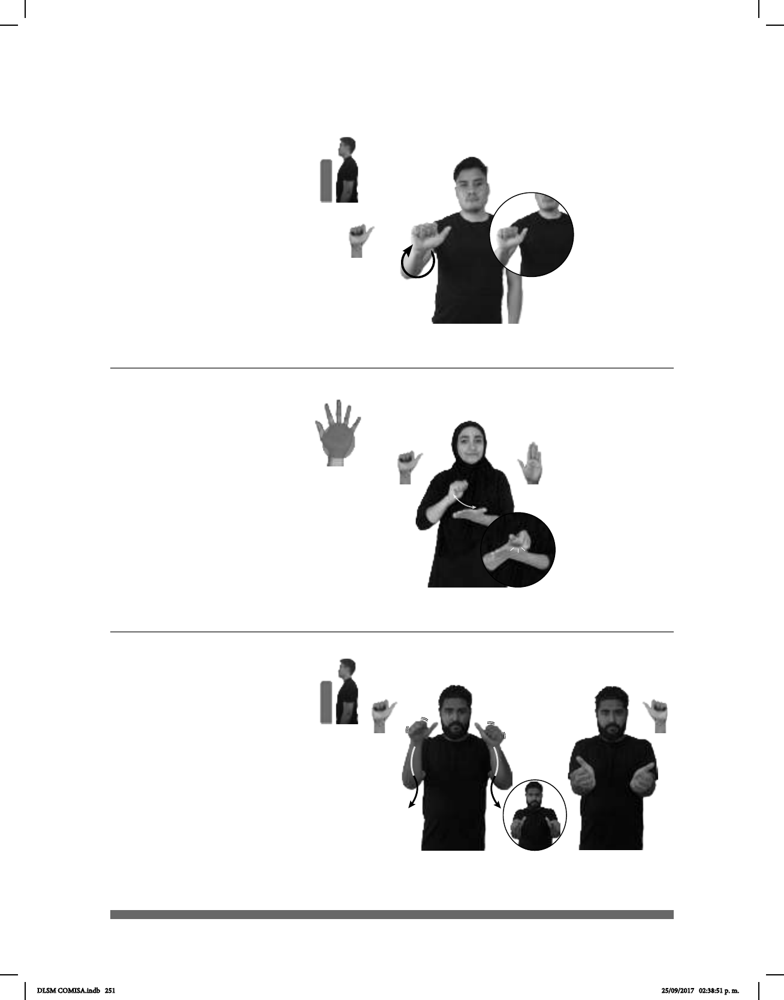

251
(A-56)
dm-ARACELI HACER ARROZ DELICIOSO
Araceli hace un arroz delicioso.
Arroba (A-55)
TODO CORREO-ELECTRÓNICO USAR ARROBA
Todos los correos usan arroba.
Arte
1
/ Artesanía
2
(A-57)
HOY DOS TARDE ZÓCALO TENER EXPOSICIÓN ARTE
allá
Hoy hay una exposición de arte en el Zócalo a las dos de la tarde.
Seña: SM
A.1
Palma hacia afuera.
A la altura del pecho.
La mano se mueve
formando un círculo.
sust. f. Símbolo (@)
usado en las direcciones de
correo electrónico que separa el
nombre del usuario del dominio al
que pertenece.
Seña: SB
MD A.1, MB B-P.2
MD palma hacia la
izquierda. MB palma hacia arriba.
A la altura del pecho. MD
sobre MB.
La muñeca de MD gira y
cambia la orientación de la mano
repetidamente.
sust. m. Planta anual propia
un grano oval rico en almidón.
Seña: SS
A.1
Palmas oblicuas hacia afuera y
hacia el centro.
Inicia a la altura de la cara y
termina a la altura del pecho.
Las manos siguen una
trayectoria ondulada.
1. sust. m. Actividad creativa del
ser humano que, con ciertas técnicas, maneja
y transforma materiales e ideas en objetos o
representaciones capaces de producir
sentimientos, emociones o sensaciones
relacionadas con la belleza o con el placer
estético. 2. sust. f. Trabajo del artesano y
cada uno de los géneros o artes que lo
componen como la alfarería, el arte
plumaria,la carpintería o la herrería.
DLSM COMISA.indb 251 25/09/2017 02:38:51 p. m.